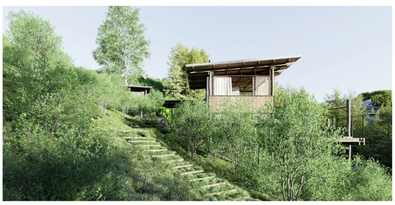
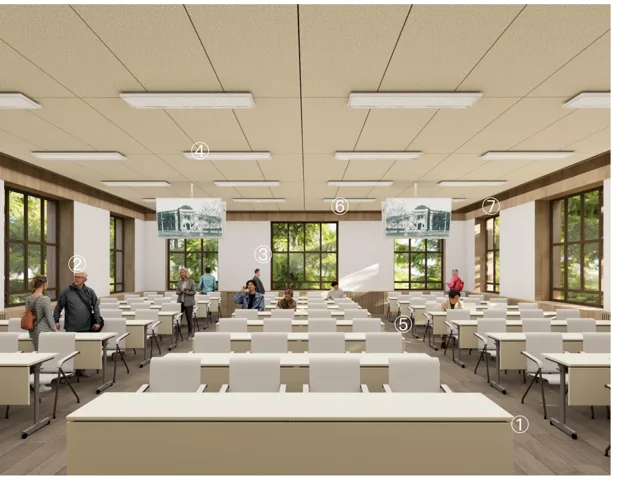
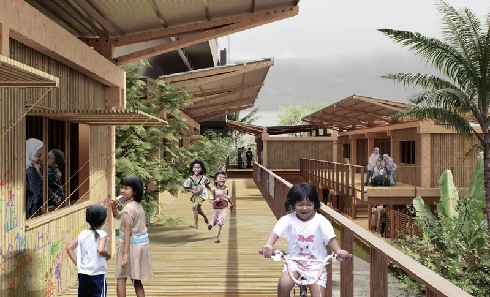
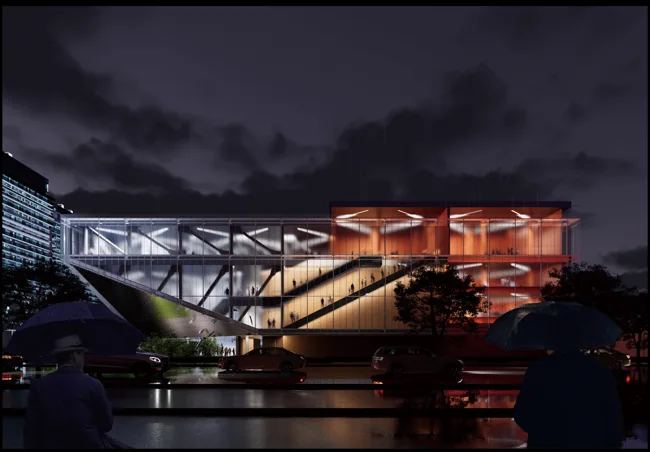
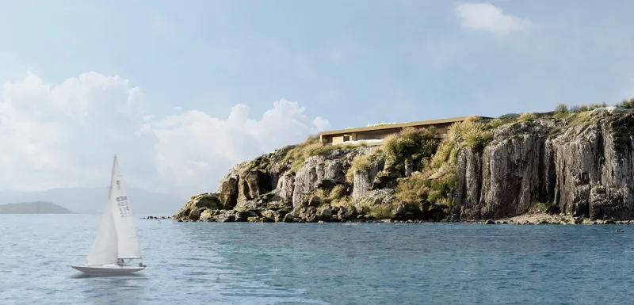
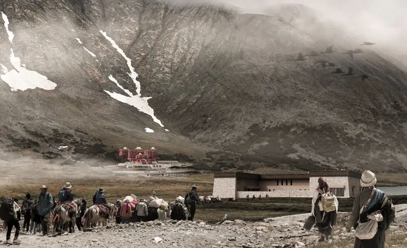
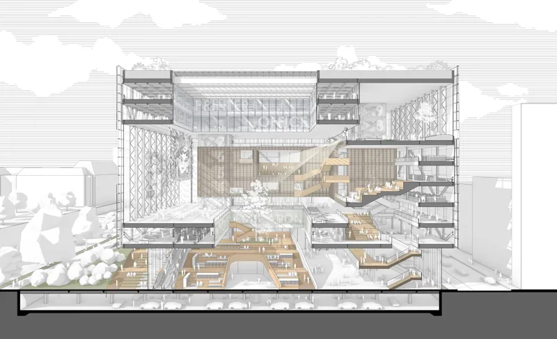
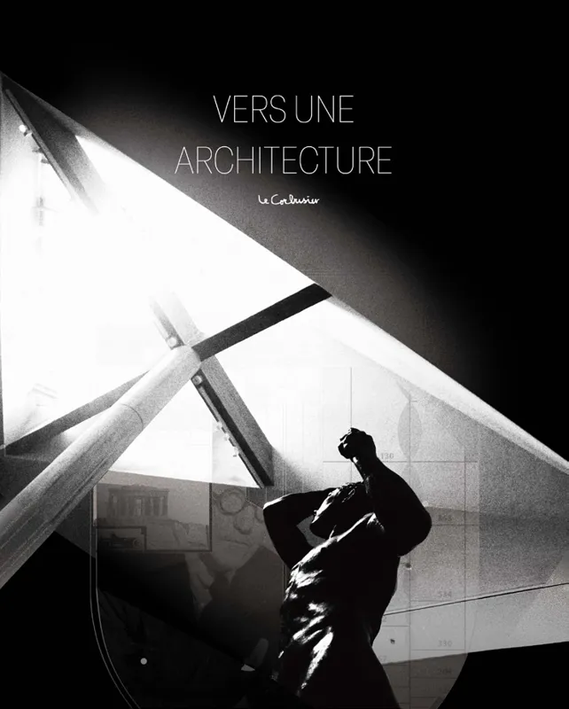

012026
Ancient Trails and Their Possible Futures
Gaoligong Mountains / Heritage / Production / Ecology
Tsinghua Outstanding Graduation Thesis
Hao Chang
Architectural designer
Selected work
2024–2026

Gaoligong Mountains / Heritage / Production / Ecology
Tsinghua Outstanding Graduation Thesis

Tsinghua University · Beijing / Learning / Adaptive reuse
Commissioned project

Kampung Melayu · Jakarta / Water / Collective life
SOM China Fellowship — Winner





Tsinghua University · Beijing / Learning / Adaptive reuse
1st Prize · Atrium Design Competition


Shichahai · Beijing / Water / Heritage / Public life
Gold Award · Urban Design · China Human Settlements Academic Year Award, 2025

How can architecture hold together
ecological change and collective life?